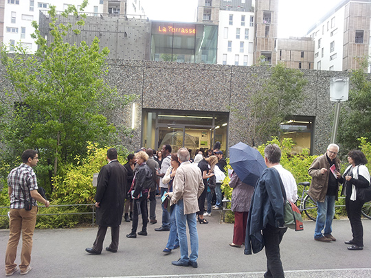

La documentation accompagnant l’exposition ne présente pas les œuvres, elle les accompagne et permet d’aller plus loin dans la connaissance des datas. Le sujet principal est l’autonomisation citoyenne ( plus exactement l’ « empowerment », un terme qui ne se traduit pas parfaitement en français ).
Cette documentation est issue de la veille réalisée par Benoît Ferchaud ( la Revue Créatique ), à laquelle est ajoutée celle de tous les participants de l’exposition, membres de l’équipe de réalisation de l’exposition « Données à voir ». Cela concerne autant des recherches préliminaires qui ont servi à affiner le projet curatorial, que d’autres parvenues après que le projet soit arrêté, défini, et venant comme autant d’évocations d’ailleurs ou de suites possibles.
Cette documentation a vocation à être augmentée, au fil de l’exposition, par chacun y compris le plus simple visiteur. Pour cela elle est placée sur un dépôt en ligne que chacun peut copier ou auquel chacun peut participer. Le site entier peut être copié et déplacé. La participation peut être faite par des contributeurs aguerris à l’usage de ces outils, ou bien par un simple message qui proposera un ajout, une modification. Ce contenu est entièrement placé sous licence libre.